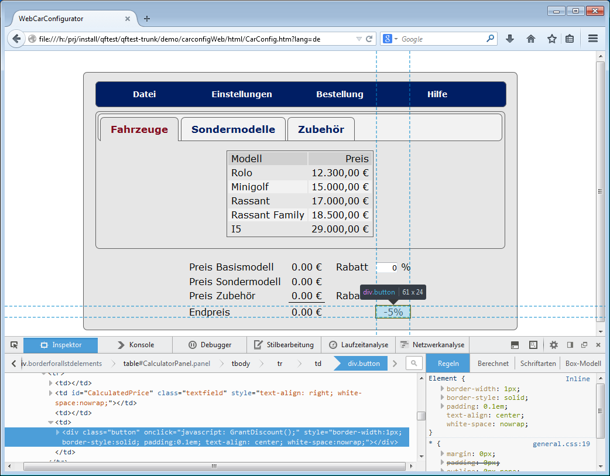

| Version 6.0.3 |
Aufgrund der Flexibilität von HTML sollte der erste Schritt sein, ein ungefähres Verständnis für das eingesetzte Framework und dessen Komponenten zu erlangen. Man sollte also klären, welche Attribute bzw. Eigenschaften typisch für die generierten Komponenten im HTML Code sind. Es stellt sich daher zum Beispiel die Frage, ob ein dargestellter Button anhand einer bestimmten Eigenschaft im HTML Code immer als Button seitens QF-Test identifiziert werden kann.
QF-Test speichert wichtige Informationen des HTML Objektes wie zum Beispiel das
class Attribut in den weiteren Merkmalen des 'Komponente' Knotens
ab. Diese können für die Analyse des DOM-Baumes und die Zuordnung der Objekte
zu funktionalen Komponenten genutzt werden.
|
|  |
||
|
| Abbildung 47.2: Aufzeichnung des '-5%' Buttons im WebCarConfigurator | ||
Eine Webseite kann auch direkt mittels mitgelieferter Entwicklerwerkzeuge der Browser bzw. mit Browsererweiterungen wie FireBug analysiert werden.
|
|  | ||
|
| Abbildung 47.3: Webseitenuntersuchung im Firefox | ||
| Letzte Änderung: 6.9.2022 Copyright © 1999-2022 Quality First Software GmbH |